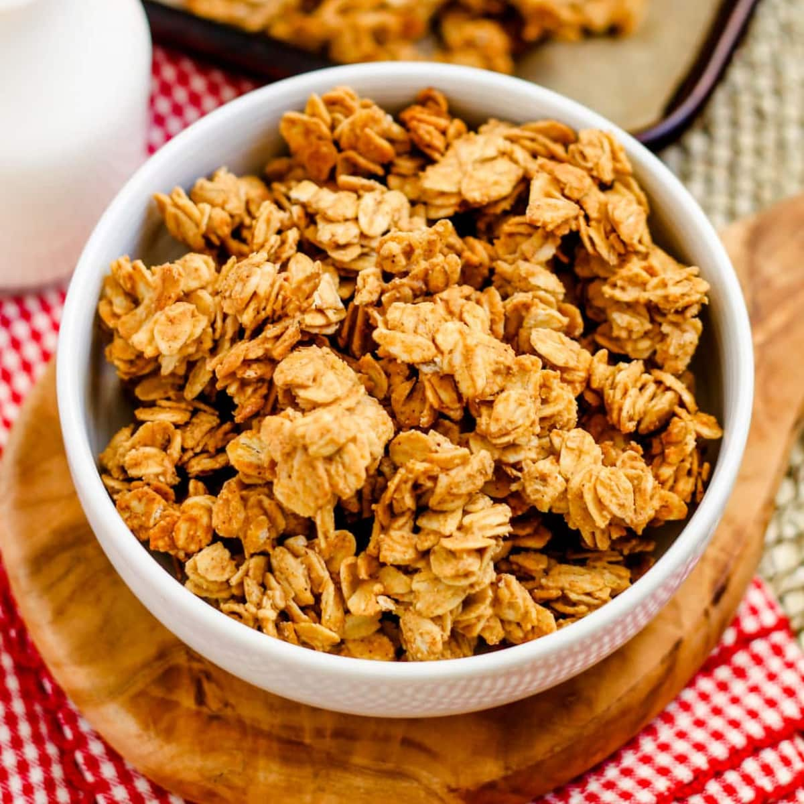

Healthy Granola

Description:
Healthy granola recipe to use as a quick snack or beakfas option with yogurt.
Ingredients:
- 4 Cups Quick Oats
- 1 1/2 Cups Almonds
- 1 Teaspoon Salt
- 1/2 Teaspoon Ground Cinnammon
- 1/2 Cup Avocado Oil
- 1/2 Cup Honey
- 1 Teaspoon Vanilla
Steps:
- Preheat Oven: Set to 350 degrees fahrenheit, lining a large baking sheet with parchment paper.
- Combine dry ingredients: In a large bowl, combine 4 cups of oats, 1 1/2 cups almonds, 1 teaspoon salt, and 1/2 teaspoon ground cinnammon
- Mix in wet ingredients: Pour in 1/2 avocado oil, honey and vanilla. Mix well to ensure all oats ar ecoated in mixture. Pour granola into pan looking to make an even layer of granola
- Bake until slightly golden: Bake for 30 minutes depending on type, keeping watch to avoid burning and stirring halfway.
- Cool: Let granola cool for at least 45 minutes before consuming. Make sure to store any leftovers in an airtight bag for 1 to 2 weeeks max.
Home